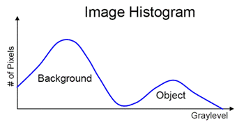
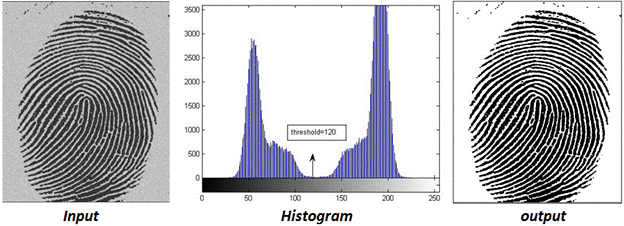
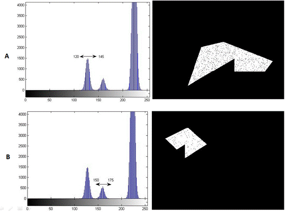
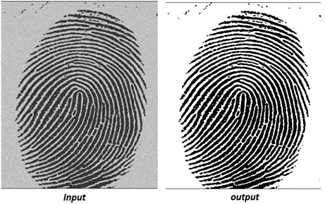
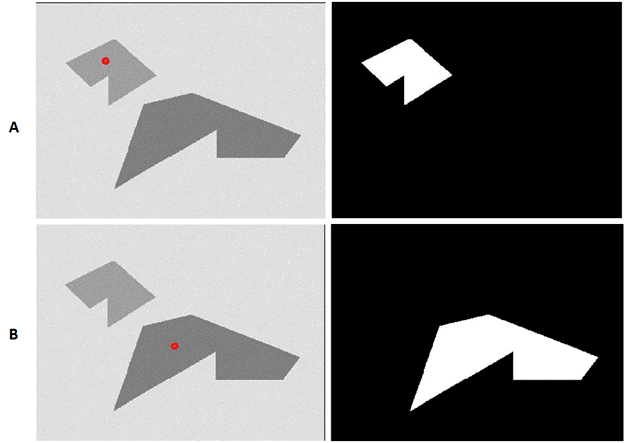

Image Segmentation
When the object(s) of interest in an image are clearly differentiated from the background in terms of brightness, then the image histogram can help in characterizing the foreground and background pixels. Figure 1 shows the histogram representing foreground and background regions of such an image. By selecting an appropriate gray-value point on the x-axis as a threshold, all pixels with value below the threshold can be considered to belong to the foreground and all those above belong to the background (and vice versa). This process is known as thresholding. There are many ways to threshold an image subject to the task in hand. In this experiment, few basic techniques of obtaining pixels of interest are explained.
Figure 1 Histogram representation of the image.
Single Threshold
Let I(x,y) be the intensity value at pixel location (x,y) and T is the threshold value. The segmentation is done as follows. If I(x,y) >= T then it is labeled 1 in the output image otherwise it is labeled as 0. The pixel value corresponding to 1 and 0 depends on the application. For instance, Figure 2 shows a fingerprint image. By selecting a threshold value T=120 yields an output where 1 is set to white or pixel value of 255. Thus, in this case, the white pixels are background and black pixels are of the object of interest (fingerprint) or the foreground.
Figure 2: The binary output image as a result of single threshold with a value of 120.
The single threshold approach is suitable when the image have a bi-modal histogram which means histogram has two distinct peaks. However, in many situations an object of interest has some variation in brightness value in which case a double threshold might be necessary.
Double Threshold:
Here, two threshold values are chosen instead of one. Let T1 > T2 be the two threshold values . If I(x,y) > T1 and I(x,y) <=T2 then pixel (x.y) in the output image is labeled 1 and 0 otherwise. Consider the image in Figure 3 with two objects. Figure 4 shows the output obtained at different threshold settings. Note how this results in extraction of different objects in the image. The selection of threshold is usually manual and depends on the image content.
Figure 3: Input image with multiple objects having different gray-scale values
Figure 4: Output of double threshold operation.
1. at T1= 120 and T2= 145
2. at T1= 150 and T2= 175.
Automatic Threshold (OTSU threshold)
The manual selection of threshold is not desirable or feasible in many applications. There are many different techniques to select threshold value automatically by analyzing image histogram.
The OTSU threshold is the most standard threshold technique used in image processing application. It assumes that the image having bi-model histogram. In other words, the foreground and background pixels have distinct intensity range in the image. It is based on the simple idea of finding the threshold that minimizes the weighted within-class variance where foreground and background are two different classes (categories need to be separated).
The within-class variance is defined as:
σ2within = nB(T) ⋅ σ2B(T) + nF(T) ⋅ σ2F(T)
nB(T) = ∑i=0T-1 p(i)
nF(T) = ∑i=TN-1 p(i)
σ2B(T) = The variance of the pixels in the background (below threshold T)
σ2F(T) = The variance of the pixels in the foreground (above threshold T)
and N= [0, 255] is the range of intensity values. The value of T from the range from [0-255] which minimizes the within-class variance is chosen and applied to get the foreground pixels.

Figure 5: Output result using OTSU threshold.
Region Growing
In the most general case, an image histogram may not be bi-modal. However, the object of interest will exhibit some homogeneity in some feature such as color, intensity, texture, etc. Region growing is a segmentation technique used to exploit this homogeneity. In this method a seed pixel is the starting point and based on a test for homogeneity pixels are accumulated to extract the object of interest. Naturally, by design, this method can segment only one object at a time and hence if there are k objects to be segmented from an image the method has to be applied k times.
Let P(x,y) be the given seed pixel inside an object in the image. The objective is to get the locations of all pixels belonging to the object. Let S be a set of locations of pixels. Initially S will have only one member, namely, (x,y).
Get neighbors (xN, yN) of pixel P(x,y) and include it in the set S
Evaluate the pixel value P(xN, yN) by comparing it with P(x,y)
a. If found similar then include (xN, yN) in set S
b. Otherwise discard location
Repeat step-1 for newly included locations in the set S
Exit when no new location is added and returns the locations in the set S.
The final locations in the set S gives the pixels belonging to the object/region of interest. The inclusion of new location to the set S depends on the similarity criteria used for the comparison. There are two standard criteria used:
a. Based on mean value: If the intensity value at the current location is within a predefined range of the mean value of the set S, it is considered similar and included.
b. Based on variance-: If inclusion of the current location does not change the variance of set S by some predefined range then it is considered similar and included.
The range selection in (a) and (b) is typically manual and based on the image and underlying object of interest. Figure 6 shows the results of using the mean as criterion for region growing with different seed points for Figure 3.
Figure 6: Region growing outputs obtained with different seed point inputs on the image given in Figure 3.
In this simple example, this method works well. In the course of the experiment, you will find that the location of the seed, the similarity criterion and the range have significant impact on the success of the segmentation.